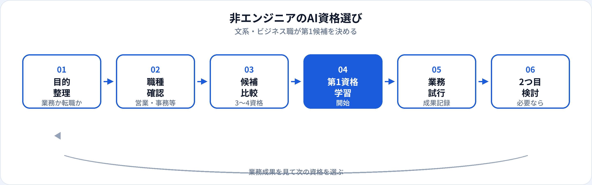

営業・企画・事務・人事など、コードを書かないビジネス職にとっても、AIリテラシーはもはや「エンジニアだけの話」ではありません。一方で、E資格や実装系の資格まで手を広げる必要はありません。本記事では、非エンジニア・文系出身者が現実的に狙えるAI資格を比較し、第1候補の優先順位、職種別の選び方、業務・転職への接続を2026年6月時点で整理します。3資格の横断比較はAI初心者が最初に取るべき資格も併せて参照してください。
非エンジニアにAI資格が必要な理由
社内で生成AIツールが使えるようになっても、「生成AI＝ChatGPT」とサービス名ごと混同していると、情報漏えい・ハルシネーション・著作権リスクを見落としやすくなります。資格学習は、ツール操作だけでなく判断の共通言語を身につける手段です。
業務での安全な活用
プロンプト設計、出力確認、個人情報・機密の扱い。明日からの会議・資料作成に直結する。
社内推進・企画の説得力
「AIを入れたい」だけでなく、リスクと効果をセットで語れると、経営・IT部門との対話が進みやすい。
キャリアの選択肢
現職強化にとどまらず、プロンプトエンジニア・データアナリスト・AI PMなど、非エンジニア出身者が狙える職種も増えている。
試験対策はこちら
生成AIパスポート 試験対策 · 一問一答 TF-0150（AIコーディング支援） · G検定 TF-003（機械学習とAI）
想定読者と「非エンジニア」の範囲
本記事でいう非エンジニアは、日常業務でプログラミングが中心ではない方を指します。次のような方が対象です。
- 文系・非IT学部出身 数学・プログラミングに苦手意識があり、まず業務で使えるリテラシーから身につけたい
- ビジネス職（営業・企画・マーケ・事務・人事・経理など） 資料作成・分析・コミュニケーションが中心で、AIで効率化したい
- 管理職・リーダー 自ら実装より、導入判断・リスク管理・部下育成が主役
- キャリアチェンジを検討中 いきなりエンジニアではなく、AIリテラシー系・企画系職種を視野に入れている
AIエンジニア・機械学習エンジニアを本気で目指す場合は、本記事の第一候補に加え学習ロードマップと実装学習が必要です。文系からの転職ルート全体像は文系からAI職へキャリアチェンジを参照してください。
おすすめ資格4つの比較
非エンジニアが検討しやすい資格を、学習負荷と業務への近さで比較しました。受験料・日程は2026年6月時点の目安です。最新は各主催の公式サイトで確認してください。
| 資格 | 向いている非エンジニア | 学習時間目安 | コード | 主な証明内容 |
|---|---|---|---|---|
| 生成AIパスポート | 全ビジネス職・社内AI活用 | 20〜40時間 | 不要 | 生成AIの業務活用・リスク・プロンプト |
| ITパスポート | IT用語に不安がある方 | 40〜80時間 | 不要 | IT全般・セキュリティ・プロジェクト基礎 |
| G検定 | AI/データ職への転職も視野 | 80〜150時間 | 不要（試験はマーク式） | AI/ML/DLの基礎・倫理・活用 |
| DS検定（リテラシー） | データ分析の入口を示したい方 | 40〜80時間 | 不要（リテラシーレベル） | データ分析の考え方・統計の基礎 |
詳細比較：3資格比較（生成AIパスポート・G検定・ITパスポート） · G検定 vs 生成AIパスポート · 文系社会人のAI資格選び
第1候補の優先順位
多くの非エンジニアは、次の優先順位で検討すると迷いにくいです。
-
第1候補：生成AIパスポート
業務で生成AIを使う・社内研修の成果を示したい・学習時間を抑えたい場合。合格後の活かし方は取得後のロードマップ。
-
IT基礎が弱い場合：ITパスポートを先に
ネットワーク・セキュリティ・クラウドなどの用語がほとんどわからない場合。土台の後に生成AIパスポートへ進む流れが有効。
-
AI/データ職を視野に：G検定
データアナリスト・AI PMなどを狙う段階で。活かし方はG検定のキャリアへの活かし方。
-
データ分析の入口：DS検定リテラシー（任意）
Excel/BI中心の業務から、分析職へのステップを示したい場合。G検定と内容が一部重なるため、目的が明確なときに選ぶ。
| あなたの状況 | 第1候補 |
|---|---|
| まず業務で生成AIを安全に使いたい | 生成AIパスポート |
| 社内DX用語・セキュリティが不安 | ITパスポート |
| 転職でAIリテラシー職を狙う | 生成AIパスポート → G検定 |
| データ分析職への入口を示したい | DS検定リテラシー（またはG検定） |
資格選びのフロー

合格で終わらせず、業務試行→成果の記録→次の資格判断まで一サイクル回すと、資格の投資対効果が見えやすくなります。
職種別：第一候補の目安
職種によって「最初に効く資格」は少しずつ異なります。以下は第1候補の目安です。詳細は各職種別記事も参照してください。
| 職種 | 第1候補 | 業務で効きやすい内容 |
|---|---|---|
| 営業 | 生成AIパスポート | 提案書・議事録・競合整理、顧客向け文案の確認（詳細） |
| カスタマーサクセス | 生成AIパスポート | オンボーディング・QBR・FAQ、解約防止の文案支援（詳細） |
| 企画・マーケティング | 生成AIパスポート | 企画書・キャッチコピー・競合整理、炎上リスクの理解（詳細） |
| 広報・PR | 生成AIパスポート | プレスリリース・危機対応文案、事実確認と著作権（詳細） |
| 事務・総務 | 生成AIパスポート | 文書要約・定型業務、個人情報・社内ルールとの整合（詳細） |
| 人事 | 生成AIパスポート | 求人票・研修資料、採用時のバイアス・個人情報の扱い（詳細） |
| 経理・財務 | ITパスポート → 生成AIパスポート | セキュリティ基礎の後、レポート要約・社内問い合わせ支援（詳細） |
| 管理職 | 生成AIパスポート | 導入判断・ガバナンス・部下への指導方針（詳細） |
| データ分析に関わる非エンジニア | G検定 または DS検定リテラシー | 分析結果の読み方、AI/MLの限界理解 |
未経験から狙える職種の整理は未経験者向けAI職種5つ、新入社員向けの資格選びは別記事、30代社会人向けは別記事、管理職向けは別記事、金融業界向けは別記事、製造業向けは別記事、医療・ヘルスケア向けは別記事、教育業界向けは別記事、公共・行政向けは別記事、営業・企画向けの学習ガイドは営業職・企画職のAI資格も参照してください。
業務への接続（合格後すぐやること）
非エンジニアにとって資格の価値は、業務改善の実例とセットで初めて伝わります。
生成AIパスポート合格後
自分の業務で1つテンプレートを作る（議事録、メール、企画骨子）。使用前・使用後の時間を記録し、社内共有資料にする。
ITパスポート合格後
社内のセキュリティ研修・DXプロジェクトで「IT基礎を整理した」と説明。続けて生成AIパスポートで実務リテラシーを足す。
G検定合格後
転職・異動志望なら、職種に合った小さな成果物（分析レポート、業務改善PoC）を1つ用意。ポートフォリオの作り方参照。
履歴書・面接でのアピール
資格欄の書き方
正式名称と取得年月を記載。「取得見込み」は年月を明記。詳細は履歴書への書き方ガイド。
職務要約との接続
「生成AIパスポート取得に伴い、月次報告書作成を40%短縮」など、資格＋定量成果を一文で結ぶ。
面接で聞かれやすい点
なぜその資格を選んだか、業務でどう使っているか、ハルシネーション・機密をどう扱うか。具体例で答える。
資格だけでは足りない点
| 資格の強み（非エンジニア） | 別途必要になりやすいもの |
|---|---|
| 学習完了の客観的証明 | 業務での再現可能な活用例 |
| リスク・倫理の共通理解 | 社内ルール・ツール固有の制約への適応 |
| 転職時の入口としての説得力 | AI職なら職種に合った成果物（分析・企画・改善事例） |
| 社内推進の「共通言語」 | ステークホルダー調整・変更管理の実務スキル |
特に生成AIパスポートは「ツールが使える」ことと「業務で安全に使える」ことは別です。合格後は必ず自分の業務データで試行し、限界（誤り、偏り）を体感しておくとよいです。
2つ目以降の資格
-
生成AIパスポート → G検定
業務活用から、AI/データ職へのキャリアチェンジを本格検討するとき。
-
ITパスポート → 生成AIパスポート
IT基礎を固めたあと、生成AIの実務リテラシーを足す定番ルート。
-
生成AIパスポート → DS検定リテラシー
分析・数値を扱う業務を広げたいとき。統計の入口として。
ダブル取得の考え方はG検定・生成AIパスポートのダブル取得も参照してください。
よくある質問
文系でもG検定は必要？
必須ではありません。現職の業務改善が主目的なら生成AIパスポートで十分なことが多いです。キャリアチェンジ段階で検討する整理が現実的です。
プログラミング不要の資格だけで十分？
現職の業務改善・社内推進なら、コード不要の資格と実務試行のセットで十分な場合が多いです。AIエンジニア職を目指す場合は別途実装学習が必要です。
社内評価・転職に資格は効く？
学習意欲の証明として有用ですが、成果実績がより重視されます。合格後はすぐ業務に接続させるのが効果的です。